I used 2 different resin colors to make this dragon. It's one of the more basic projects I have done.These dominos were done at the same time with a single pour. No two look exactly alike.
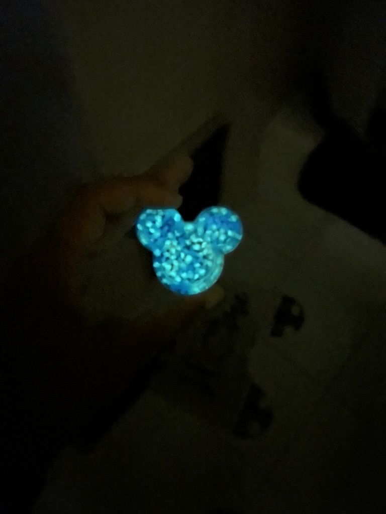
Glow-in-the-dark aquarium stones embedded in resin with a subtle green tint.
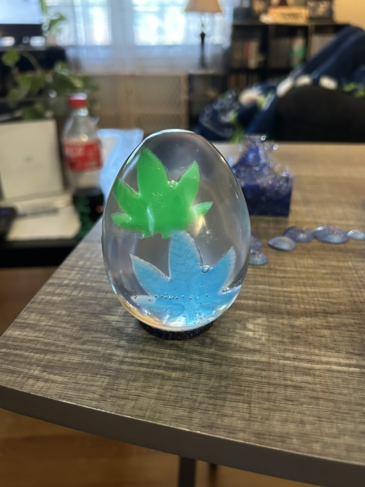
Two preserved leaves set inside a clear resin egg using UV resin.
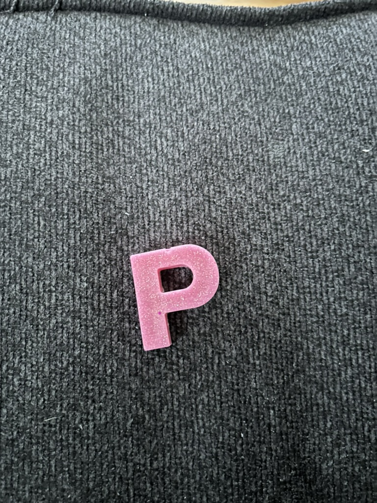
UV resin letter created with a darker pigment, demonstrating material balance challenges.Epoxy resin skull ashtray with UV resin details in the eyes and mouth.
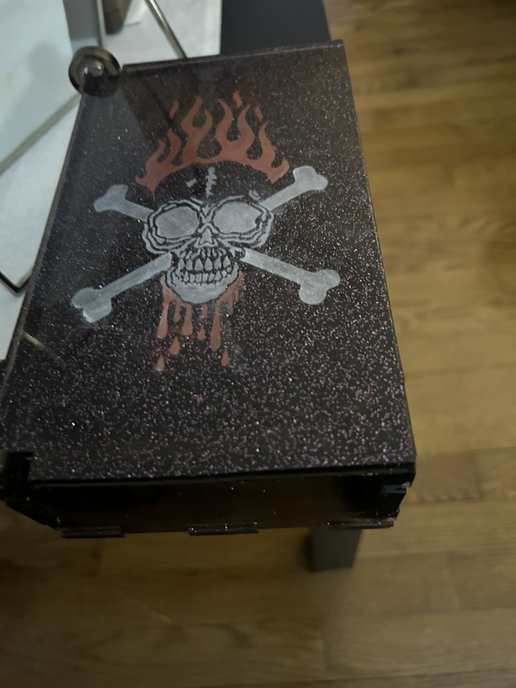
Skull design created with a stencil and mica powder, finished with epoxy resin.
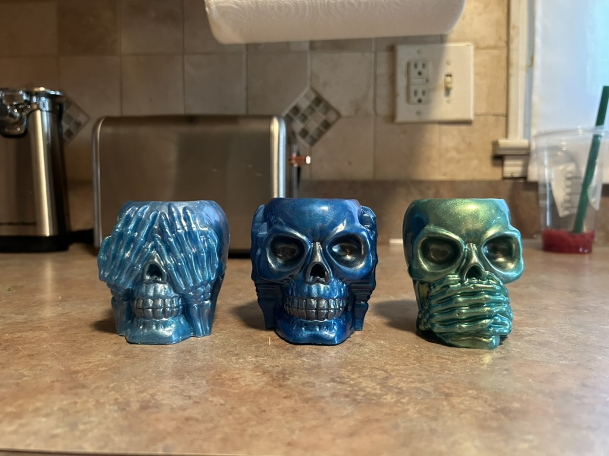
No Evil skull containers made by brushing mica powder directly into the mold before pouring.Mini resin skulls created using an ice cube tray mold. Colors were randomly selected.
Mixed Media
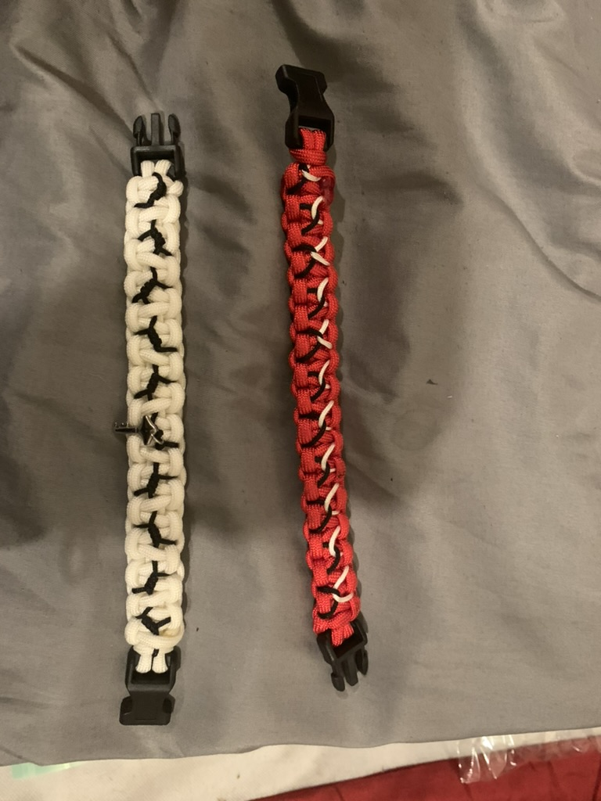
Two paracord bracelets with a stitched pattern. The white and black bracelet features a key at the center.
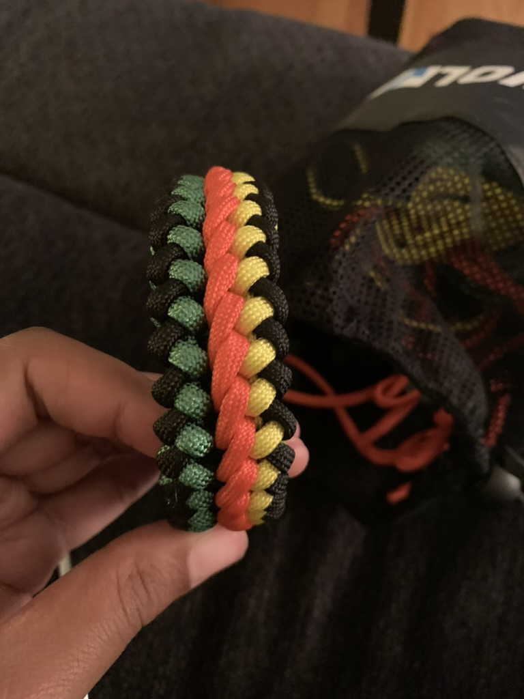
A three-color bracelet featuring black on the outer edges, with red, green, and yellow woven through the center.
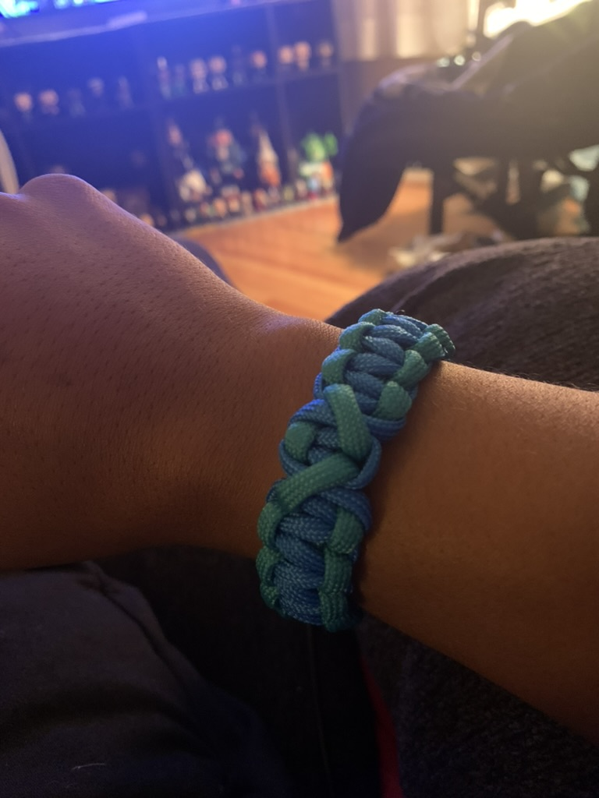
Blue and green paracord keychain with heart design. Center section loosely resembles a heart.
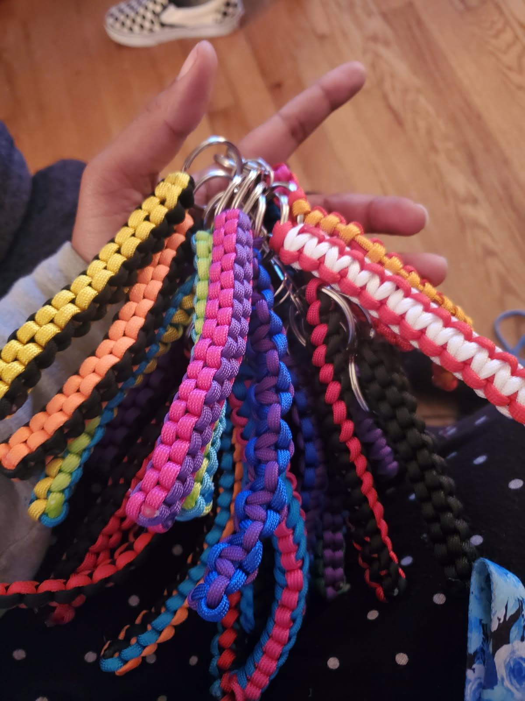
Assorted paracord keychains in various colors, made as Christmas gifts for coworkers.
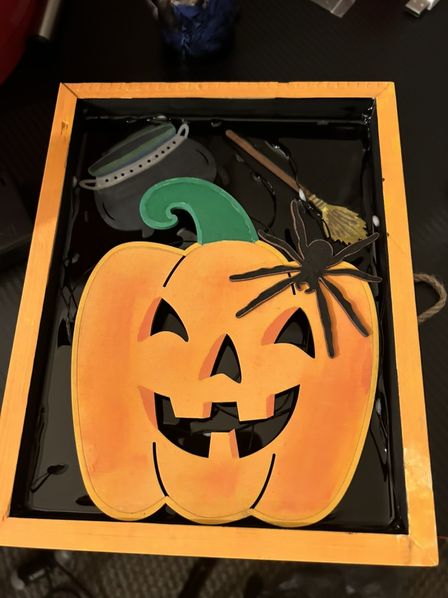
Painted wooden box filled with Halloween decorations and lights, sealed with resin.Hand-painted wooden rose sealed with resin to preserve color and finish.
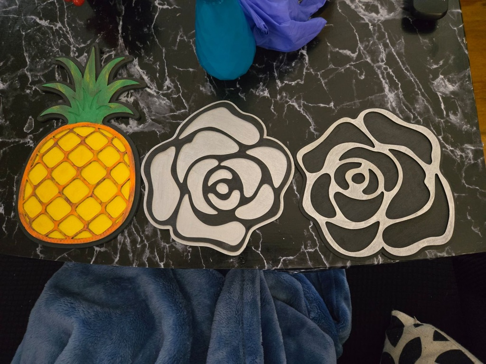
Painted wooden pineapple and roses, small selection of finished items.
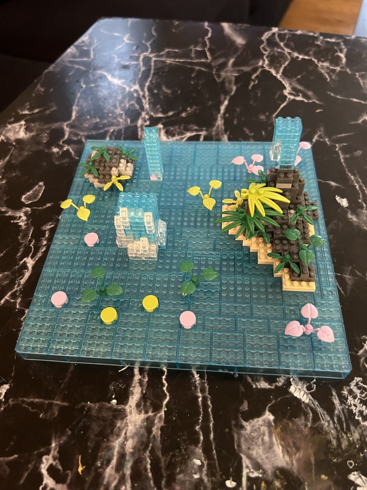
Partially completed LEGO build, nearing completion.
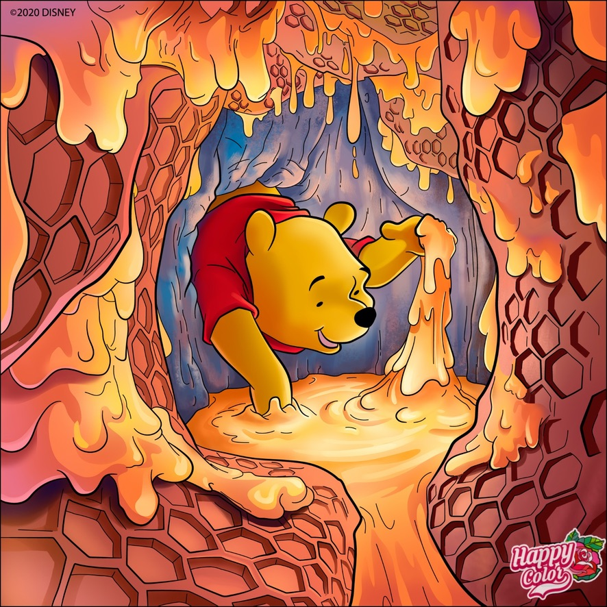
Digital color-by-number image of Winnie the Pooh created for a friend using a tablet app.
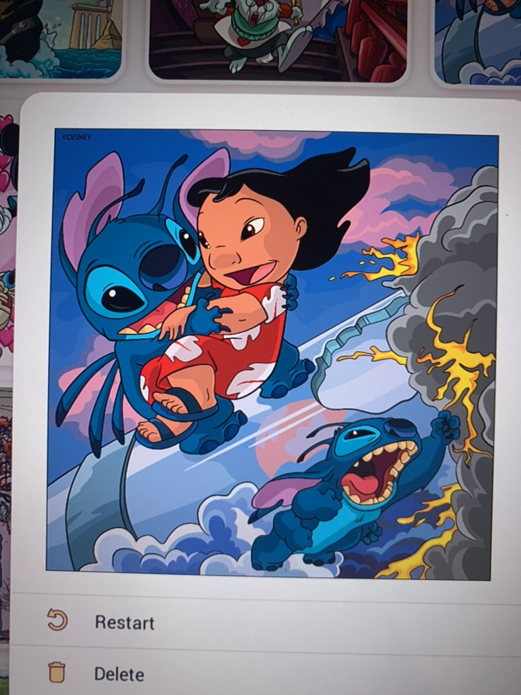
Digital color-by-number image of Lilo and Stitch using a tablet app.


{kind=link}
{kind=link}
{kind=link}

{kind=link}
{kind=link}

{kind=link}
{kind=link}
{kind=link}
{kind=link}
{kind=link}


{kind=link}
{kind=link}
{kind=link}
{kind=link}